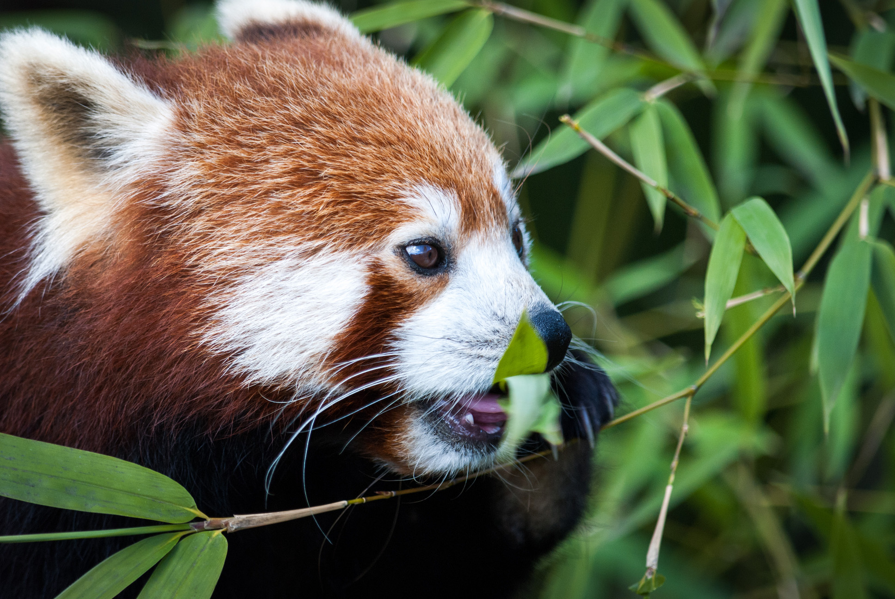
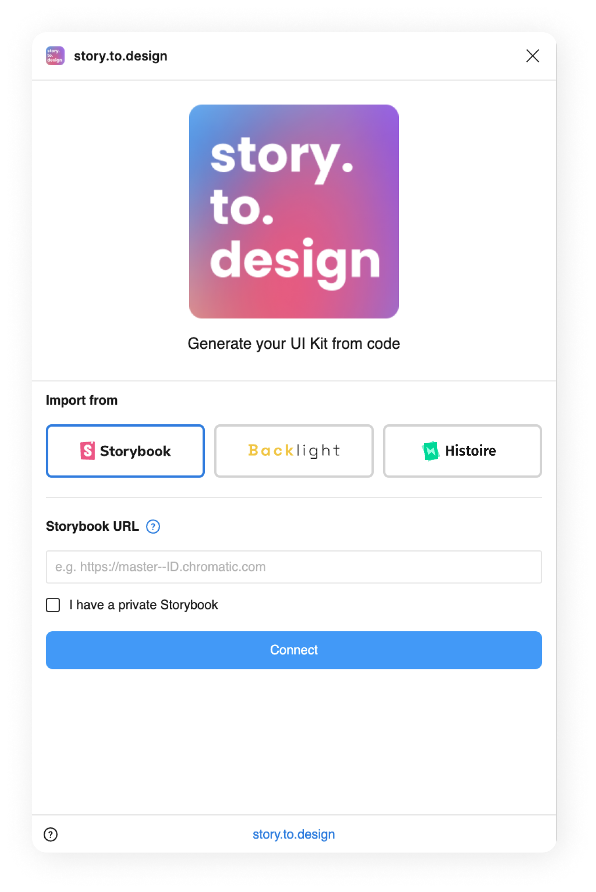
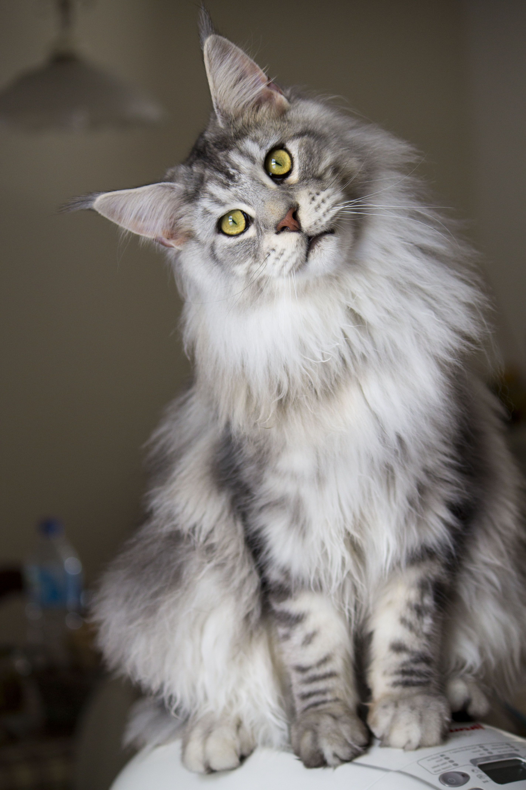
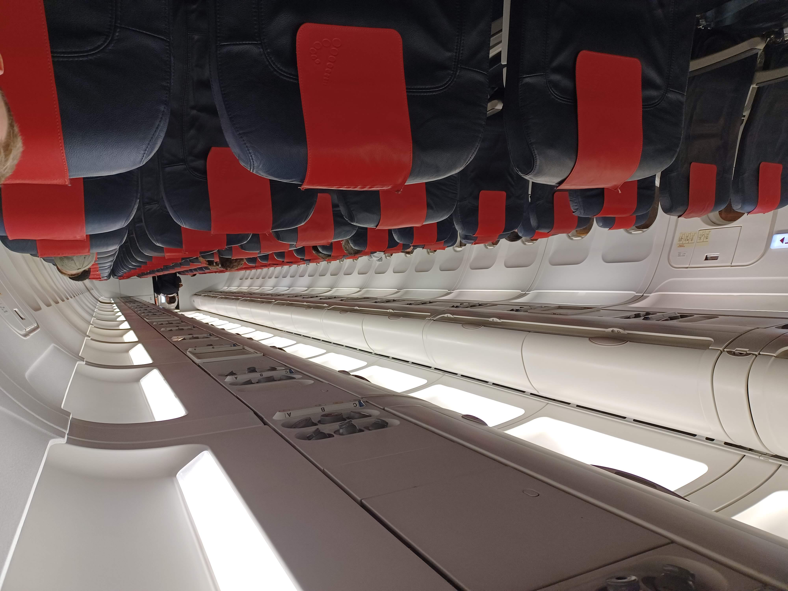

Responsive images generation
The right image size will be used by the browser based on the device of
the user.
PICTURE tag
picture_redpanda.jpg
WebP and AVIF image sources with srcset created.

picture_music.png
image too small -> no srcset

picture_screenshot.png

Picture tag with media sources

IMG tag
JPEG image

PNG image
First step image (@1066w) is bigger than original size WebP, so step is ignore.

Image without [width] attribute
Image without [height] attribute
Jam SVG

Bass SVG

Image with EXIF rotation should output correctly
